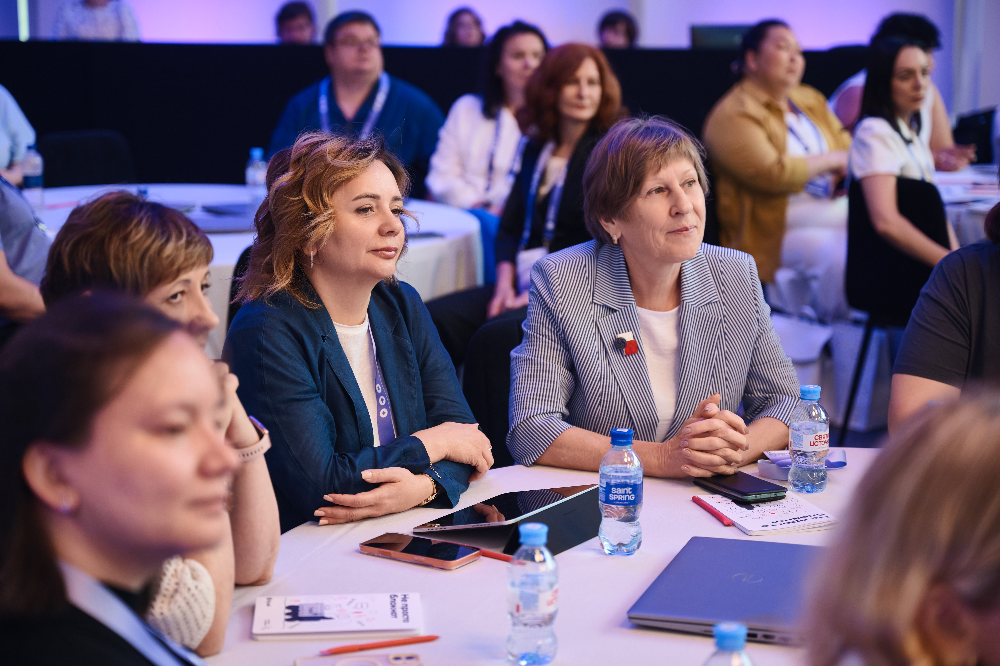
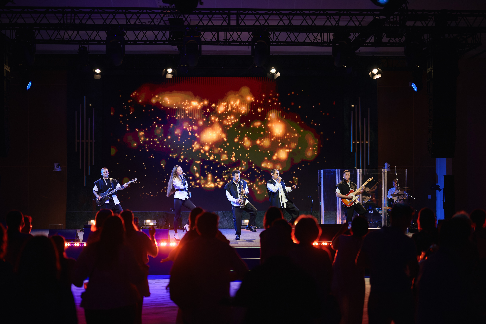
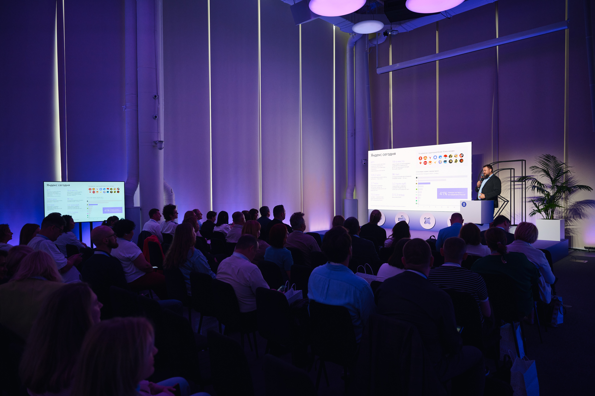

Обо мне
События, которые решают бизнес-задачи
Event-менеджер с опытом организации образовательных, деловых и онлайн-мероприятий для аудиторий от 20 до 5 000+ участников. Реализовала более 25 мероприятий со средним NPS около 90%.
В цифрах
Избранные кейсы
Проекты

Всероссийская конференция информатиков
3 дня интенсивного образовательного контента с трансляциями и неформальных вечерних мероприятий. 400 участников, 100 спикеров. Цель: Укрепление имиджа лидера отрасли, привлечение новых и реактивация уснувших пользователей в продукте.
Результат: NPS - 86%, 900 новых пользователей в продукте.

Серия региональных съездов
Региональные события для создания и укрепления профессионального сообщества. От 150 до 650 человек. Цель: Привлечение новых пользователей и активация в продукте.
Результат: активация до 60%, укрепление GR партнерств, увеличение базы почт на 45%, NPS - 95%

Конференция Яндекс Образования
120 очных участников, 5 тысяч онлайн зрителей, 5 потоков трансляции. Цель: Ретеншен в продукт.
Результат: Ретеншен 70% за счет касания аудитории + механика поощрения, NPS - 90%.
Дополнительный опыт
Другие проекты

Стажировки сотрудников образования
Образовательные интенсивы (1-2 дня), от 20 до 150 человек. Цель: Ретеншен и активация в продукте через влияние ЛПР на пользователей.
Результат: Активация около 1500 пользователей,укрепление GR партнерств.

Вебинары
Образовательные вебинары с продуктовой коммуникацией. Цель: активация в продукте.
Результат: NPS 70%, до 3тыс активаций суммарно за год.

Конференция Яндекс для образования
GR-конференция о бесплатных продуктах различных сервисов. 4 секции, 100 участников - представители органов управления.
Результат: укрепление GR-партнерств, более 50 обращений в сервисы.
Компетенции
Что я делаю
Продакшен
Концепции, брифы и ТЗ, сметы, площадки, тайминги, технические сценарии, логистика и риск-менеджмент.
Коммуникации и маркетинг
Приглашение, регистрация, пост-коммуникации; email, CRM, SMM; работа с брендбуком, фото-, видео- и постпродакшен.
Работа с людьми
Коммуникация со стейкхолдерами, координация подрядчиков, волонтёров,хостес и др. персонала, ведение переговоров, работа с ведущими, спикерами.
Контакты
Обсудим ваш проект?
Открыта к предложениям о работе и сотрудничеству.